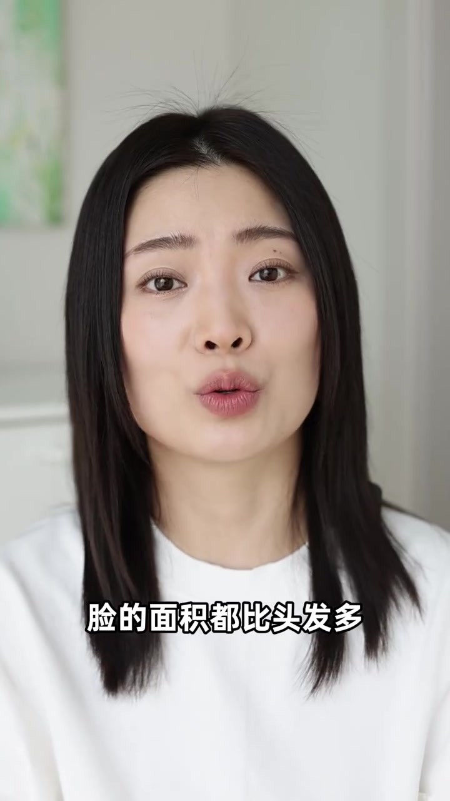
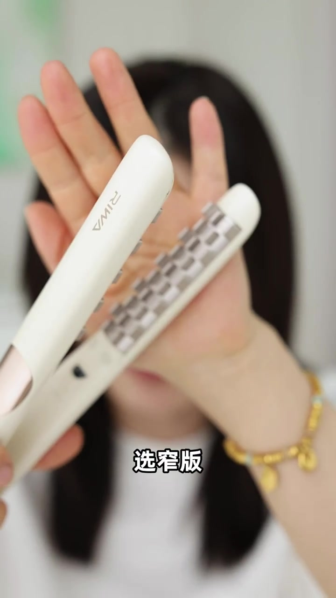
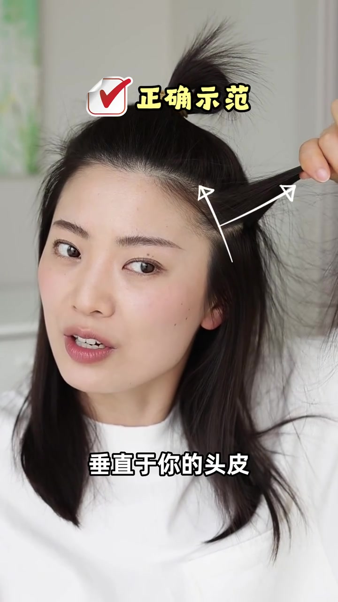
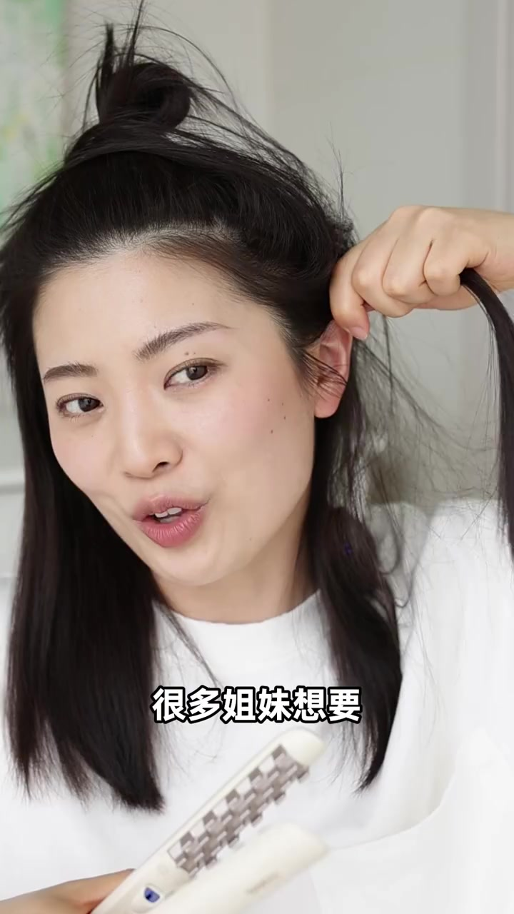
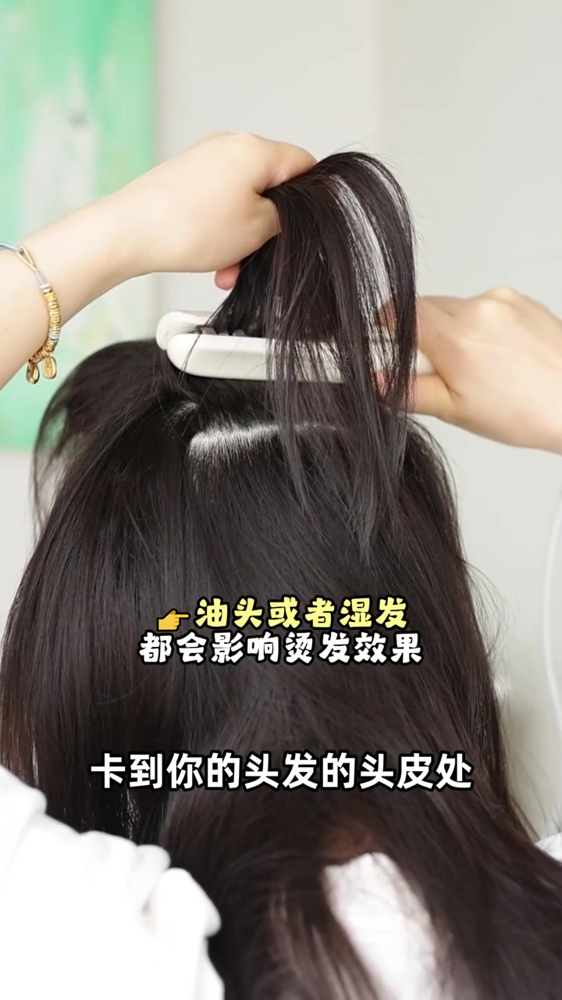
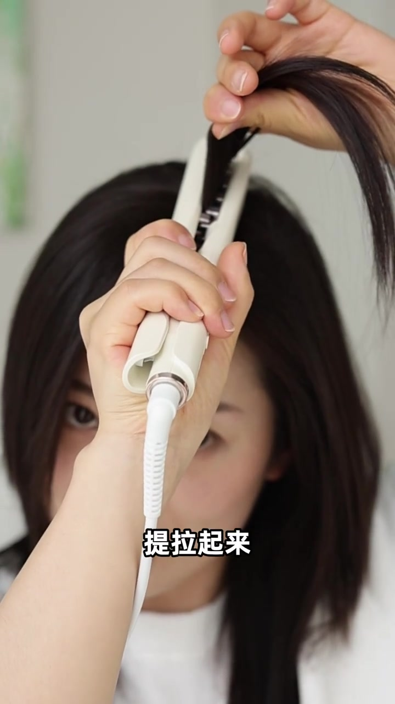

开场：方圆脸困扰，目标是明星同款头包脸
UP 主先点出方圆脸姐妹的常见困扰，再预告今天要复刻「明星同款头包脸」——三分钟把「这样」变成「那样」，主打披发、扎发都好看。画面很快切入户外持伞造型样片，叠出「明星同款的头包脸」字幕，把成品轮廓先立住。
画面字幕：「是不是都有这样的困扰」；「明星同款的头包脸」；口播大意：「主打一个披发、扎发都好看。」
说明：Whisper 常把「披发」听成「P发」、「扎发」听成「扎症」。下文以可见字幕与操作画面为准；末尾转录区仍保留原始分段。
先讲清：头包脸和脸包头差在哪
天天听人说「头包脸、脸包头」，差距到底在哪？UP 主给出对照：脸包头是颅顶低、贴头皮，颞区扁、后脑勺扁，整头没有厚度，所以披发或扎发时「脸的面积都比头发多」；头包脸则是正面侧面看过去，轮廓都圆润饱满。
画面字幕：「脸的面积都比头发多」；口播：「整个的轮廓都是圆润饱满的。」

工具：选窄版、有网格纹的夹板
进入实操前先亮工具。UP 主展示一把带马赛克/网格纹加热板的白色夹板（画面可见 RIWA 标识），强调「不要选择特别宽的，选窄版」。她说把轮廓夹好其实不难：分区定位，再用对方向。
画面字幕：「选窄版」；口播：「它是这种看见没，像马赛克一样。」
Whisper 将「选窄版」误识为「选斩板」，将「夹板」误识为「甲板」。产品画面与字幕以「窄版夹板」为准。

分区：头顶两骨、天灵盖到耳尖、枕骨扁区不烫
UP 主用手在头上「画标」：摸过来时头顶有两块骨头——「这是绝对不能烫的」，一烫方脑袋的立体感反而更重。从这里往前找线，到耳尖往上中间的「天灵盖」区域先扎起来不烫；后面睡觉压扁的枕骨区、摸起来最扁的一块（大约手掌大）也不烫，否则头会显得很厚。理想轮廓要像「问号」一样弧线。侧区才是真正要烫的地方。
口播大意：「这个地方有两个骨头……绝对不能烫」「它得是一个像问号一样才好看。」
有人会说「我就是这样分的」，结果还是扁平贴头皮——接下来重点就是角度。
侧区实操：垂直提发片，夹板往前往上顶
画面打出「正确示范」：把发片拿起来，垂直于头皮；夹板完全贴到发根，可先停留五到十秒，再「夹板往前往上顶」，夹一下松一下。烫到耳廓附近结束；两片侧发往往就够。耳后扩弧特别重要——这个地方立起来会显得脸小，可多停留一下，一动两下即可。不要急着放下，等冷却定型。
画面字幕：「把你的发片拿起来」「这个夹板呢往前往上顶」「你的耳后扩弧」。
Whisper 把「耳后扩弧」听成「耳后扩呼」，「夹板」听成「甲板」。以字幕为准。


后脑勺：先留一指宽不烫，再分片加厚
耳后稍上方先分出一指宽一片不烫。越平的位置，夹得越使劲、停留越长，发量就越厚。操作仍是左手拎、右手夹，卡到头皮处再放着冷却。UP 主后脑勺烫了三片，压完之后厚度也不会塌。
叠字提醒：「油头或者湿发都会影响烫发效果」；字幕：「卡到你的头发的头皮处」。

关键：颅顶只烫两指宽，提拉再夹
最后到关键的颅顶：不能全部烫。无论中分还是稍微偏分，只取两个指头宽度，并分成两次烫。先烫最外面一片，提拉角度很重要——提到发根、提拉起来，夹两下，等冷却。她演示时力道偏猛，方便大家看清轮廓差异。
画面字幕：「就是颅顶」「提拉起来」。

修整空洞、压过高弧度，然后往后一撩露耳
第一次夹难免不流畅：哪里空，就穿进去单独拿一片补夹；用力过猛太翘或太高，就手沾一点水轻轻摸，干了就好。夹完后随意往后一撩，尤其耳后扩弧要在；觉得头不够高，可按着顶发往上推一推。头发往前或往后放都行，把耳朵露出来。收尾号召铁粉在评论区打招呼，并提示评论区有奖励。
叠字：「夹完丰满度不够怎么办？」；口播大意：「随意的给它这样往后一撩……把耳朵露出来。」